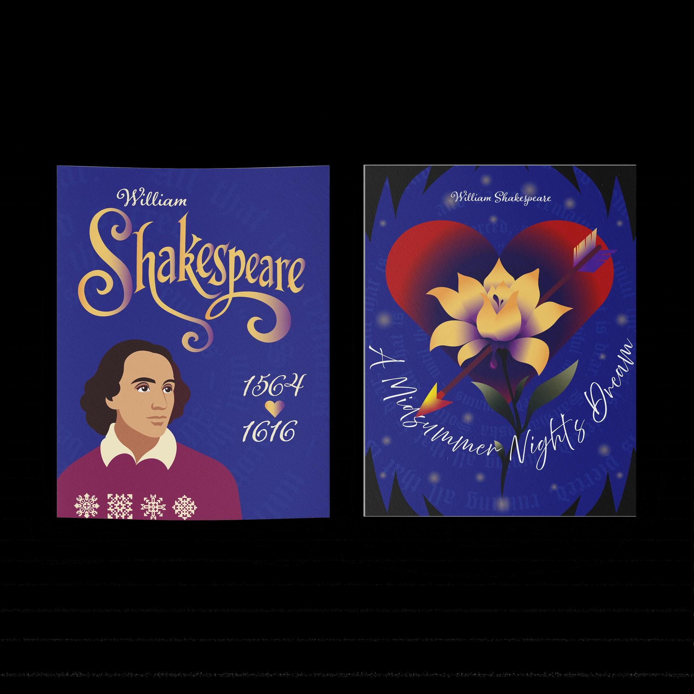
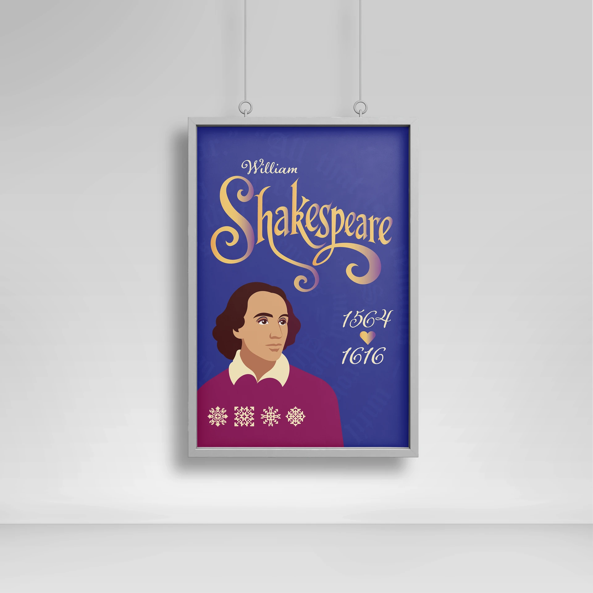
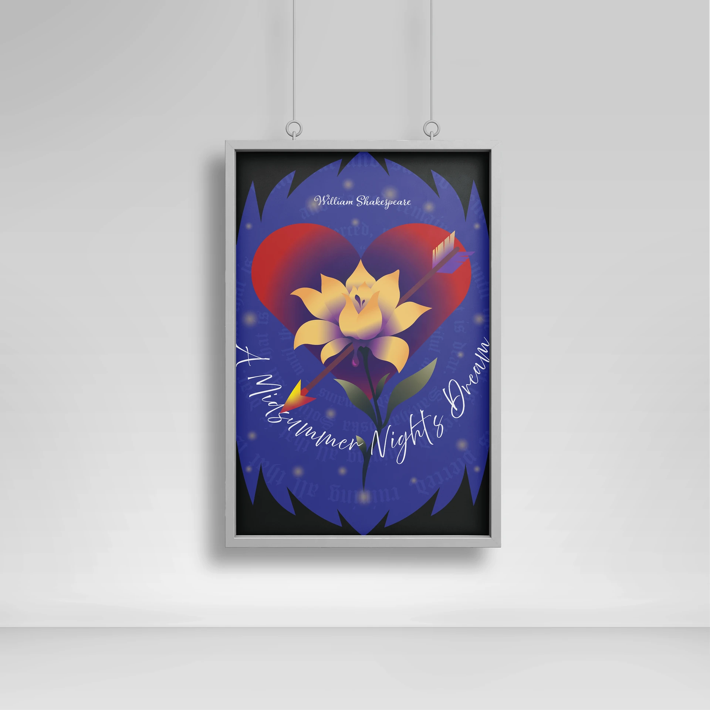

A simplified likeness and formal script create recognition without historical imitation.
Selected workTheatre begins
Illustration & typography · Independent series
Theatre begins
before the curtain.
Two illustrated posters move from Shakespeare as a cultural figure to the romantic, unstable atmosphere of A Midsummer Night’s Dream.

- My role
- Concept, vector illustration, lettering, colour & composition
- Context
- Independent poster series
- Tools
- Adobe Illustrator
- Output
- Two finished poster compositions
01 / The idea
Move from a person to a feeling.
The first poster establishes Shakespeare through portrait and ceremonial lettering. The second leaves biography behind and interprets a play through desire, enchantment, and misdirection.
A heart, flower, and arrow compress the play’s romantic confusion into one image.
Deep blue, gold, burgundy, and curved lettering give both works a theatrical voice.
02 / The pair
One author. Two visual worlds.
The pair is designed as a sequence: identity first, interpretation second. The shared palette holds the posters together while their composition changes from stable portraiture to dreamlike symbolism.
03 / The craft
Lettering becomes part of the illustration.
The titles do not sit above the images as captions. Script, ornament, and curved text direct the eye and establish each poster’s emotional register.


04 / The result
A theatrical identity expressed through image and type.
The finished pair demonstrates original vector illustration, expressive lettering, symbolic composition, and the ability to create related works without repeating the same layout.